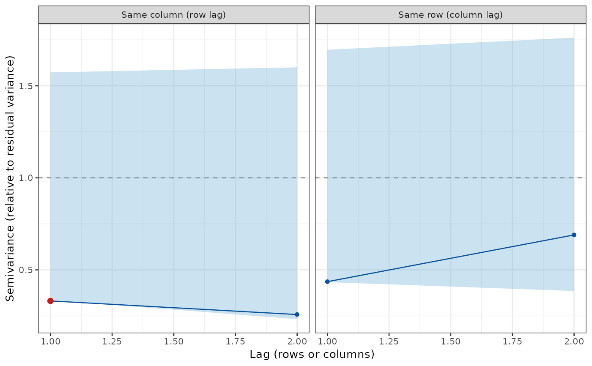

The sample variogram of a model's residuals over the field: half the mean squared difference of the residuals of two plots, by how far apart they are. Plots that are close together and more alike than the model allows (spatial correlation, a trend across the field) show as a variogram that rises with the lag instead of staying flat. A global envelope from data simulated from the fitted model shows the range expected without any spatial pattern.
Two layouts:
Row x column grid (
row,col): field trials. The semivariance of plotslag_rowrows andlag_colcolumns apart (in either diagonal direction), as ASReml and Genstat show it; the edgeslag_col = 0(plots in the same column) andlag_row = 0(in the same row) are the two directions an AR1 x AR1 model describes.Coordinates (
coords): any positions. The semivariance by class of distance (class k holds the distances in [k, k+1) xstep, as Genstat'sFVARIOGRAM), over all directions or bydirections.
Usage
residvariogram(
model,
row = NULL,
col = NULL,
coords = NULL,
by = NULL,
data = NULL,
max_lag = NULL,
step = NULL,
directions = NULL,
segment = 45,
lonlat = FALSE,
robust = FALSE,
min_pairs = 20,
nsim = 99,
conf_level = 0.95,
seed = 2026,
ncore = 1,
plot = TRUE
)Arguments
- model
A fitted model (any class
residplothandles), or a numeric vector of data values, whose variogram is then given as it is (not scaled, no advice).- row, col
Names of the variables (in
data) holding the row and column positions of the plots, as whole numbers counted over the whole field (or over each trial withby), not within blocks; or vectors of them.- coords
Instead of
rowandcol: the names of two variables with the x and y coordinates (or a two-column matrix); withlonlat = TRUElongitude and latitude in degrees.- by
Name of a variable (or a vector) that splits the plots into trials: one variogram per trial, never pooled.
- data
The data: by default those the model was fitted to (the rows used); needed for a numeric
model, and when the layout variables are not in the model's data (give the rows used in the fit).- max_lag
Grid: the largest row and column lags (one number or two); default half the number of rows and of columns (longer lags have few pairs and add noise to the test). Coordinates: the largest distance; default half the largest distance between two points.
- step
Coordinates: the width of the distance classes; default
max_lag / 15.- directions
Coordinates: directions in degrees anticlockwise from the x axis (east), e.g.
c(0, 45, 90, 135); default all directions together.- segment
Coordinates: the angle (degrees) each direction covers, centred on it; default 45.
- lonlat
TRUE:coordsare longitude and latitude (degrees); distances in km (haversine).- robust
TRUE: Cressie and Hawkins' estimator, less affected by a few large differences.- min_pairs
Lags with fewer pairs are left out (default 20, as Genstat).
- nsim
Number of data sets simulated from the fitted model for the envelope (permutations within each trial for a numeric
model); 0 for none.- conf_level
Coverage of the global envelope.
- seed
Seed of the simulations (the user's random number stream is left as it was).
- ncore
Number of cores for the simulations (refits).
- plot
TRUE: draw the variogram (autoplot()).
Value
A data frame of class "pm_variogram": trial (with by), lag_row and
lag_col (grid) or direction and lag (the mean distance in the class), gamma,
n_pairs, lower and upper (the envelope), outside; attributes test (the global
test per trial) and advice (advice). autoplot() draws it.
Details
Residuals are those of residplot (one place): conditional residuals scaled by the residual
standard deviation for lmer (the random effects, e.g. blocks, removed), normalized for lme and
gls (their correlation structure removed: a correct spatial model leaves a flat variogram), randomized
quantile residuals for Poisson, binomial and negative binomial models. They are scaled by their standard deviation
within each trial, so the semivariance is relative to the residual variance: about 1 at every lag when there is no
spatial pattern (Genstat's "0-1 scale").
The semivariance is \(\gamma(h) = \sum (e_i - e_j)^2 / (2 N(h))\) over the \(N(h)\) pairs at lag \(h\)
(Matheron); robust = TRUE gives \((\sum |e_i - e_j|^{1/2} / N)^4 / (2 (0.457 + 0.494 / N))\) (Cressie and
Hawkins 1980). The envelope: nsim data sets are simulated from the fitted model (independent errors, no
spatial pattern beyond the model), the model refitted and the variogram of its residuals computed; for lm
and aov exactly, without refits. Residuals are correlated through the fitted effects (plots in one block
sum to zero), so permuting them would give a wrong reference (in a simulated trial with blocks, 15% false alarms
at the 5% level); the simulated residuals carry the same correlation. The envelope is the global scaled maximum
absolute difference envelope of Myllymäki et al. (2017): the observed variogram lies wholly inside it with
probability conf_level when the model is right, however many lags are shown; p.value is the
matching global test (it needs nsim of at least 19 at 95%). With several trials the p-values are
adjusted over the trials (Holm; p.adj), and the advice uses the adjusted ones. Classes without simulate() and a refit (gam, semireg, aov with
Error()) get the variogram without an envelope. The test informs; the remedy is a model choice.
A row x column position may hold one plot per trial: positions that repeat stop with a message (rows or columns numbered within blocks give wrong lags).
References
Cressie, N. and Hawkins, D. M. (1980). Robust estimation of the variogram. Mathematical Geology, 12, 115-125.
Gilmour, A. R., Cullis, B. R. and Verbyla, A. P. (1997). Accounting for natural and extraneous variation in the analysis of field experiments. Journal of Agricultural, Biological, and Environmental Statistics, 2, 269-293.
Myllymäki, M., Mrkvička, T., Grabarnik, P., Seijo, H. and Hahn, U. (2017). Global envelope tests for spatial processes. Journal of the Royal Statistical Society B, 79, 381-404.
Webster, R. and Oliver, M. A. (1990). Statistical Methods in Soil and Land Resource Survey. Oxford University Press.
Examples
library(predictmeans)
# a field trial in 6 rows x 6 columns, 3 blocks of 2 rows, with a smooth trend over the field
set.seed(1)
d <- expand.grid(row = 1:6, col = 1:6)
d$block <- factor((d$row + 1) %/% 2)
d$variety <- factor(sample(rep(1:6, 6)))
d$yield <- 10 + as.numeric(d$variety) + sin(d$row / 2) + cos(d$col / 2) + rnorm(36, sd = 0.3)
fm <- lm(yield ~ block + variety, data = d)
v <- residvariogram(fm, row = "row", col = "col", nsim = 19, plot = FALSE)
v
#> Sample variogram of standardized residuals on the row x column grid
#> Semivariance relative to the residual variance: about 1 without spatial pattern.
#> Global envelope test (95%, 19 simulations from the model): p = 0.05
#>
#> Lags along rows and columns (all 12 lags: as.data.frame(x); the surface: autoplot(x, type = "surface")):
#> lag_row lag_col n_pairs gamma lower upper outside
#> 1 0 30 0.331 0.335 1.57 TRUE
#> 2 0 24 0.257 0.232 1.60 FALSE
#> 0 1 30 0.436 0.433 1.70 FALSE
#> 0 2 24 0.690 0.385 1.76 FALSE
#>
#> Advice:
#> ! Plots next to each other in the same column are more alike than the model
#> allows (the variogram is below the envelope at the shortest lag): the
#> standard errors of the means ignore it. Fit a spatial covariance (AR1 x
#> AR1 in ASReml or Genstat; in R, gls() or lme() with corExp(form = ~ row +
#> col)) or a smooth surface s(row, col) in semireg(), and check its
#> variogram.
ggplot2::autoplot(v)
